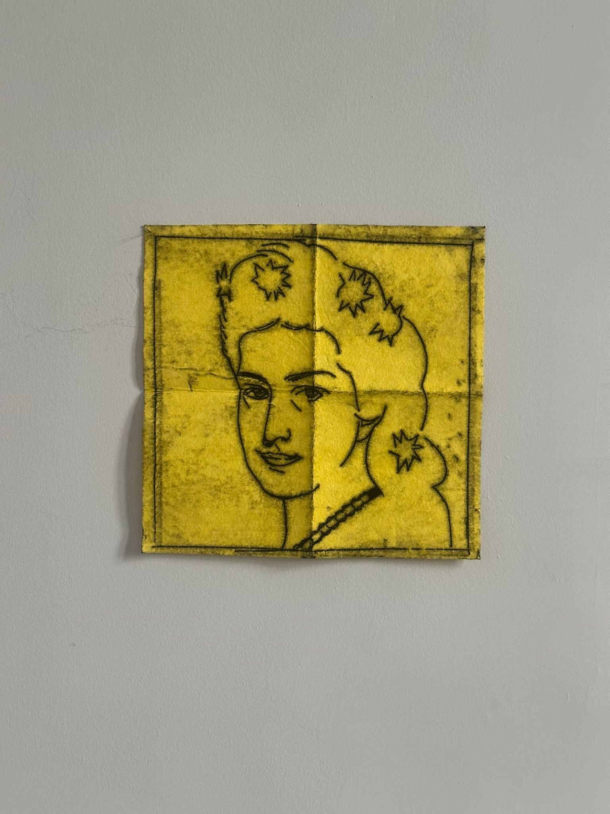
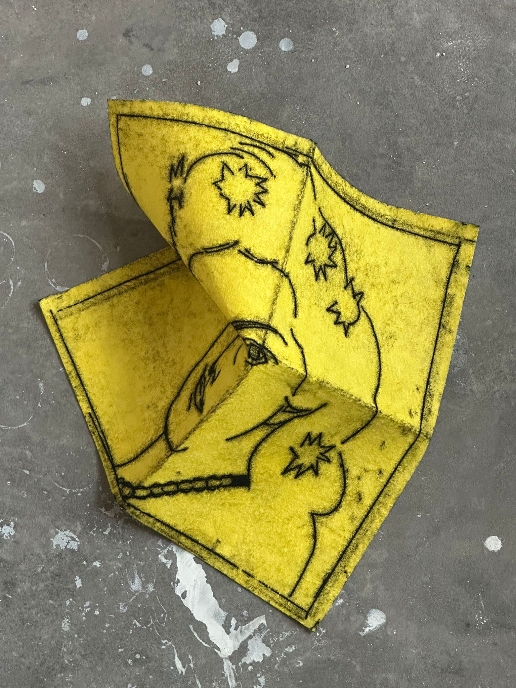
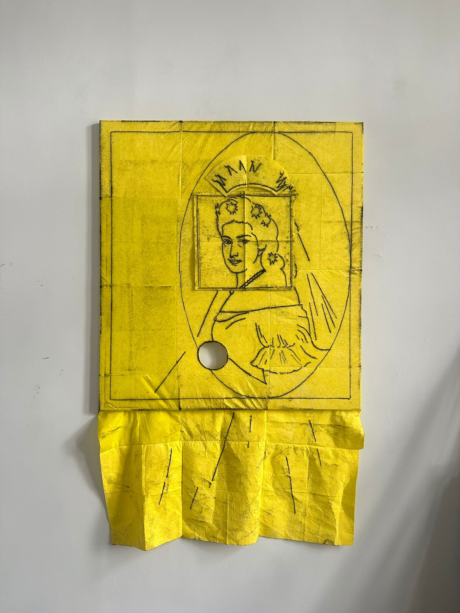
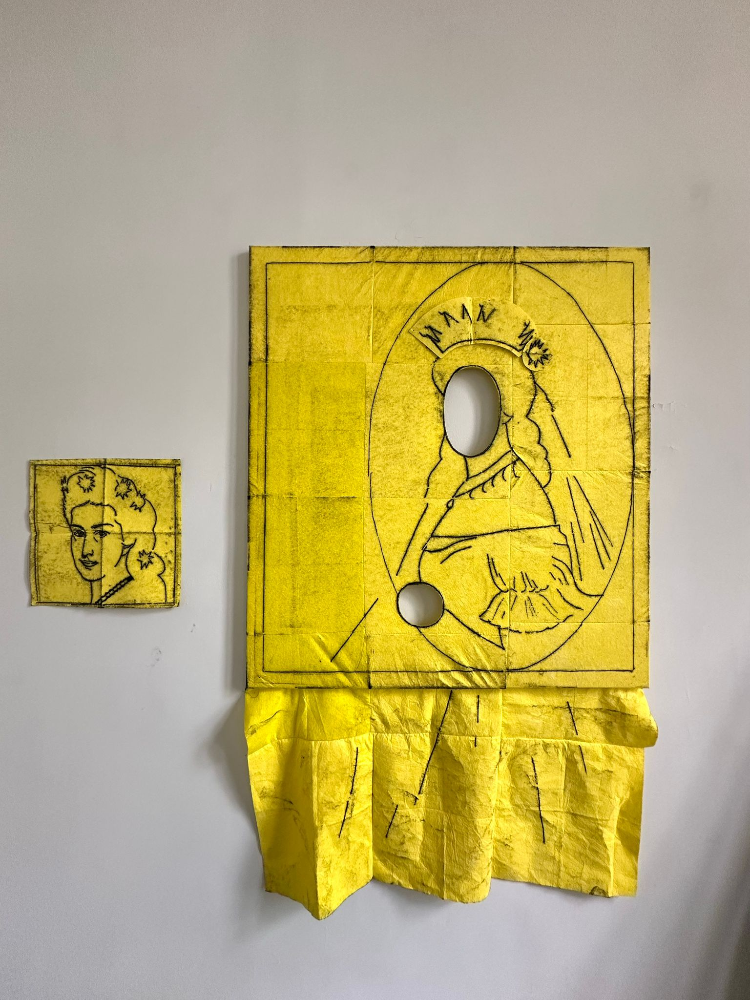

Pilot for a new lesson for my daughter on the desire of disappearance. In progress: Before you apply for leefloon, try commodifying nothingness.
An die Gaffer
Ich wollt´, die Leute liessen mich In Ruh´ und ungeschoren, Ich bin ja doch nur sicherlich Ein Mensch, wie sie geboren. Es tritt die Galle mir fast aus, Wenn sie mich so fixieren; Ich kröch´ gern in ein Schneckenhaus Und könnt´ vor Wut krepieren. Gewahr´ ich gar ein Opernglas Tückisch auf mich gerichtet, Am liebsten sähe ich gleich das, Samt der Person vernichtet.
To the tiring spectators
I wanted people to let me be In peace´ and calm, unscathed, I'm so far only certainly A human born like them. Bile's almost coming out of me, When into me they bore this way. I'd like to creep into a snail shell. And die of anger. If I see an opera glass Treacherously directed at me, I crave to see it Destroyed with the person holding it.
There is no need for social benefits, if you can successfully revive yourself by denying the essence of commodity, which you failed to earn anyways. Your best option is to be a seductive foreigner, a fetish in your own right, instead of the alienatingly sad individual. You need to fight the anonymity that comes with being an ordinary man in the elitist writings of reality, when the elite man projects upon you the disapearance that he craves himself. The Austrian empress Sisi would have given her royal self to live as a failed merchant-Jewish poet. Carve your own place.



